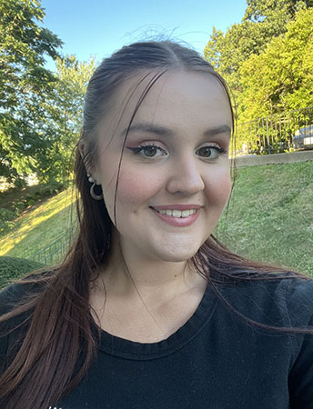

Contact
Grace Phillips
JMU Student
gracie.e.phillips14@gmail.com

Experience
Writing Consultant
January 2023-Present
James Madison University
Harrisonburg, VA
- Assisting writers during the brainstorming process
- Guiding students through the revision process
- Offering effective feedback and constructive criticism
on a variety of genres including, but not limited to,
personal narratives, argumentative/persuasive pieces,
creative writing, etc.
- Making writers comfortable throughout the revision
process
- Effective at delivering constructive criticism
Brand Associate
July 2020-Present
Old Navy
Manassas, VA
- Engaging with customers to assist them during their
shopping experience
- Conducting a variety of transactions at the register
- Training new employees on the floor
- Helping with online order processing
- Working on visual displays and mannequins
- Encouraging customers to open credit cards
Resident Advisor
August 2022-December 2022
James Madison University
Harrisonburg, VA
- Provided resources for first year students during their
transition to college
- Collaborated with other RA’s to create and host events
for residents
- Prepared bulletin boards to provide a plethora of
resources for students
- Hosted community events to help the residents get to
know one another
- Got to know each resident to help them with their
transition to college
Education
James Madison University
Bachelor of Arts
School of Media Arts and Design
GPA: 3.640
Expected Graduation: May 2025
Skills
- Experience in Adobe Photoshop
- Experience in Adobe Illustrator
- Experience in Adobe InDesign
- Experience in Microsoft
Applications
- Experience in Google Applications
- Experience with Mac and
Windows